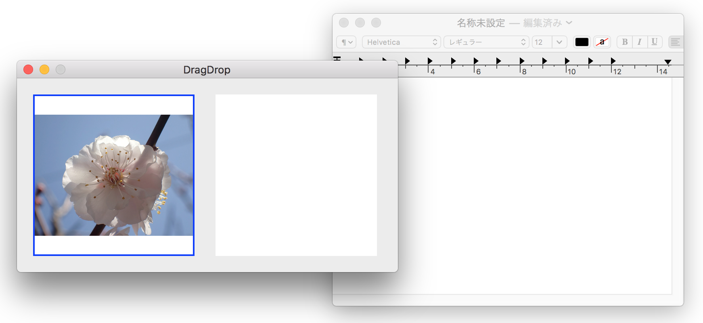

ビューの間でイメージをドラッグ＆ドロップする

画像をクリックすると動画になります。
本例では、ビューに表示しているイメージオブジェクトをコピーし、同一アプリケーションの異なるビューにドロップしたり、異なるアプリケーションである「テキストエディット」のビューにドロップしている。オブジェクトの受け渡しはドラッグ用ペーストボードを介して行われる。
ペーストボードのイメージ
![[pasteboard]](/lib/HTMLofImage.html?filename=/data/B47/pasteboard.png&title=copy_paste1pasteboard&width=700)
始めにドラッグの開始側、オブジェクトのコピー元の処理について説明する
NSDraggingSourceプロトコルの宣言
ドラッグ開始側になるには、NSViewクラスのサブクラスを作成し処理を実装するが、NSDraggingSourceプロトコルの適用を明示的に宣言する必要がある。
ドラッグ用ペーストボードに格納するオブジェクトの指定
ドラッグ用ペーストボードに格納可能なオブジェクトの種類をUTI文字列で指定する。本例ではイメージオブジェクトを指定する。Swift/Objective-Cアプリケーションの中では、 イメージオブジェクトはTIFFオブジェクトとして扱われるので UTIは "public.tiff"
（CFString定数は kUTTypeTIFF）とする。
UTI定数をグループ化してラップした NSPasteboardクラスの PasteboardType定数を使うこともできる。こちらの方が簡単。
[ 特記事項 ]
ドラッグ元として操作できるオブジェクトに FileURLを指定できない。つまり、このアプリケーションがFinderからドラッグ＆ドロップによりURL情報を取得できたとしても、それを別のアプリケーション（例えば再び Finder）にドラッグ＆ドロップすることができない。SwiftのURLクラスが NSPasteboardWritingプロトコルに適用できていないようだが、OSのバージョンが上がればできるだろう。ちなみにNSURLクラスは適用しているので、Objective-C版では実現できる。（実行環境 macOS 10.12.6 ）
ドラッグの実行
ドラッグするイメージを表示しているビューの上でマウスを右クリックし、イメージを貼り付けるビューまでドラッグしてドロップする。ドラッグ中は、イメージと同じ画像がドラッグの軌跡とともに移動する。この画像はアプリケーションで自由に作成することができる（後述）。
以上を行うためには、次の二つのメソッドを実装すればよい。なおドロップ処理はドロップ先のアプリケーションの仕事になるので特に何もすることはない。
ドラッグの開始を宣言する
mouseDownイベントのハンドラをオーバーライドする。
ドラッグ中の処理
NSDragOperationを返すだけのデリゲートメソッドだが必ず実装すること。戻り値は genericを返しておけばよい。
ドラッグ中に表示する画像を作成する
上記のコードでは、ドラッグ中に表示する画像はイメージと同じ大きさになる。これをサムネイルのような小さな画像をマウスをポイントした位置に表示するためには次のようなコードとなる。
オブジェクトのドロップ処理
基本的な手順は Finderからイメージファイルをドラッグし、ビューに表示するのドロップ処理と同じであるが、ドロップの本体処理のみ異なる。イメージオブジェクトをペーストボードから読み込む場合は、クラスまたは UTIタイプを指定して読み込むだけでよい。
クラス NSImageを指定して読み込む。
NSPasteboard.PasteboardTypeを指定して読み込む。（UTIに対応）
ソースコード
ドラッグ＆ドロップ、コピー＆ペーストの全ての処理を網羅した共通のアプリケーションとなっている。
AppDelegate アプリケーション制御
UAView NSViewクラスのサブクラス
NSView+imageDisplay イメージの表示サイズを変更するユーティリティ